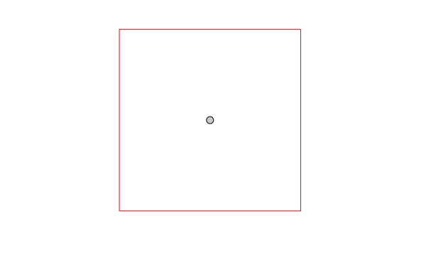
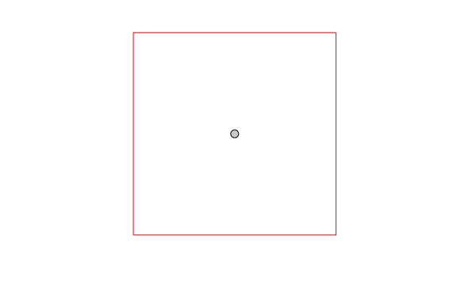

DESCRIPTION
v.buffer creates a buffer around features of
given type, which have a category in the
given layer. The tolerance controls the number of vector
segments being generated (the smaller the value, the more vector
segments are generated).
NOTES
Internal buffers for areas can be generated with negative distance
values ("inward buffer" or "negative buffer" or "shrinking").
v.buffer fusions the geometries of buffers by default.
Categories and attribute table will not be transferred (this would
not make sense as one buffer geometry can be the result of many
different input geometries). To transfer the categories and
attributes the user can set the t flag. This will result in
buffers being cut up where buffers of individual input geometries
overlap. Each part that is the result of overlapping buffers of
multiple geometries will have multiple categories corresponding to
those geometries, and multiple buffer areas can have the same
category. The buffer for the input feature with category X can thus
be retrieved by selecting all buffer areas with category X (see
example below).
Buffers for lines and areas are generated using the algorithms from
the GEOS library.
For advanced users: built-in buffer algorithm no longer
desired, we use GEOS: If GRASS is not compiled with GEOS support
or environmental
variable GRASS_VECTOR_BUFFER is defined, then GRASS
generates buffers using built-in buffering algorithm (which is still
buggy for some input data).
The options minordistance, angle, tolerance are
kept for backward compatibility and have no effect with GEOS buffering.
Corner settings
The following vector line related corners (also called "cap") exist:
- no cap:

- rounded cap:

- square cap:

By default v.buffer creates rounded buffers (blue color on
figure below):
 Straight corners with caps are created by -s flag (red color on
the figure below), while -c flag doesn't make caps at the ends of
polylines (green color on the figure below):
Straight corners with caps are created by -s flag (red color on
the figure below), while -c flag doesn't make caps at the ends of
polylines (green color on the figure below):

 Using -s with a point vector map as input data, square buffers are
created instead of round buffers.

Using -s with a point vector map as input data, square buffers are
created instead of round buffers.

EXAMPLES
All examples are based on the North Carolina sample dataset.
Buffer around input lines
v.buffer input=roadsmajor output=roadsmajor_buffer type=line distance=100

Buffer of 100m along the "roadsmajor" lines (map subset, original center line
shown in black)
Circles around input points
v.buffer input=hospitals output=hospitals_circled type=point distance=2000

Buffer of 2000m around the "hospitals" points (map subset, original points
shown in black, new area centroids in red)
Circles around input points with attribute transfer
v.buffer input=hospitals output=hospitals_circled type=point distance=1000 -t
# display buffer around hospital with category 36,
# this buffer is composed of several areas:
d.vect map=hospitals_circled type=area layer=1 cats=36
# extract this buffer, dissolving boundaries
v.extract in=hospitals_circled output=hospital_36_circled layer=1 cats=36 -d
Buffer around input areas
v.buffer input=lakes output=lakes_buffer type=area distance=100

Buffer of 100m around the "lakes" polygons (map subset, original areas
shown in black)
Buffer inside input areas
In this example, an internal buffer ("inward buffer" or "negative buffer")
is generated using a negative distance value:
v.buffer input=lakes output=lakes_buffer type=area distance=-50

Internal buffer of 50m inside the "lakes" polygons (map subset, original areas
shown in black)
Not all features are buffered, only the polygons that allow creation inside
a topological cleaned polygon.
REFERENCES
SEE ALSO
r.buffer,
v.parallel,
v.extract,
v.type,
v.patch,
v.db.connect
AUTHORS
Radim Blazek
Rewritten by Rosen Matev (with support through the
Google Summer of Code program 2008)
Rewritten by Markus Metz (2011, 2012)